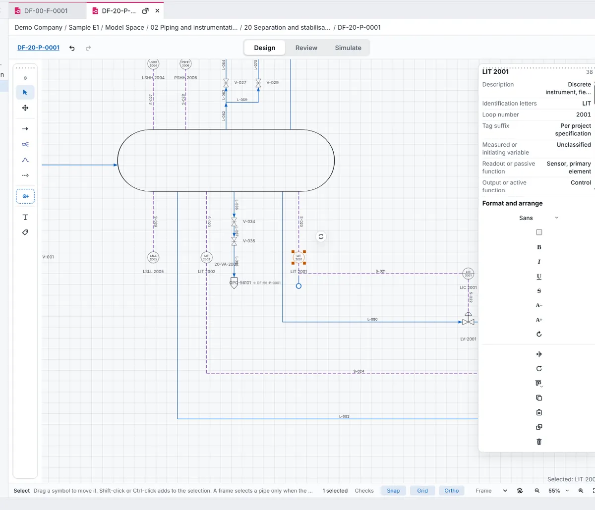
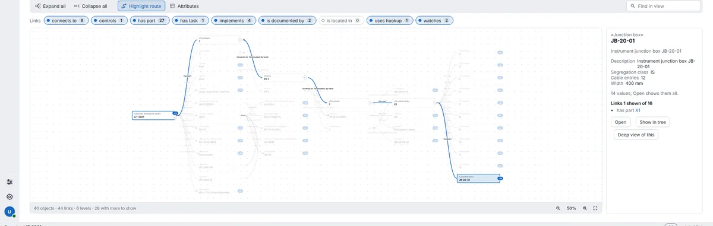
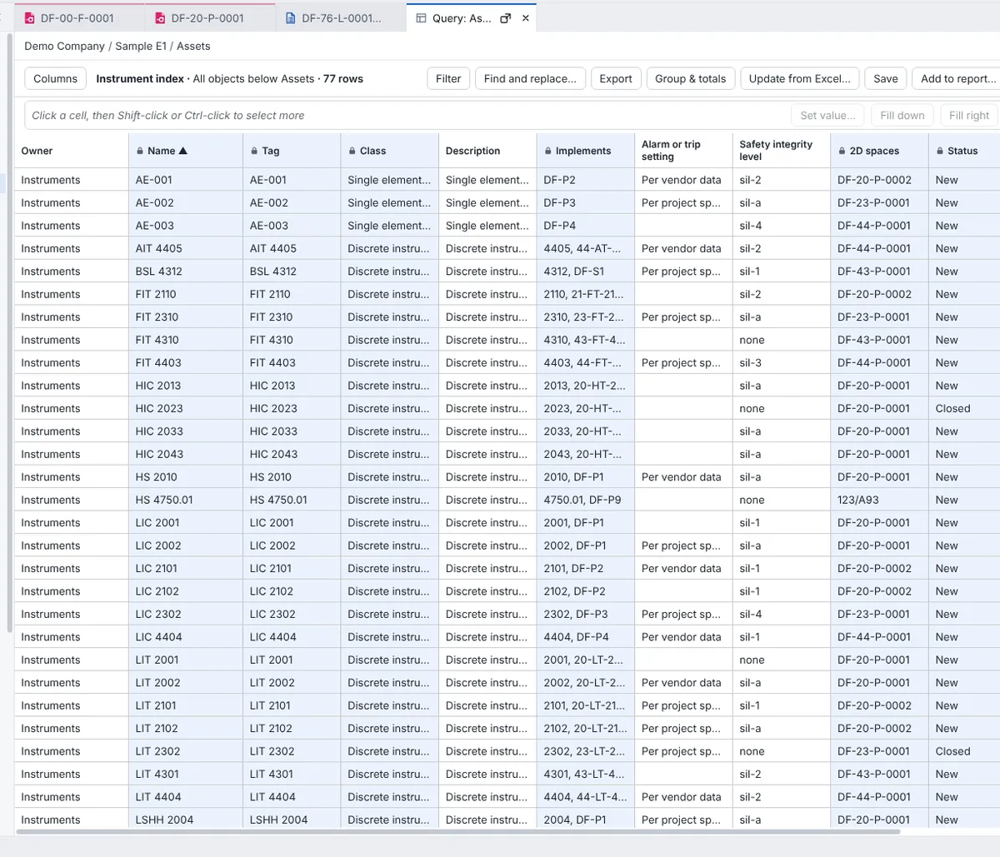
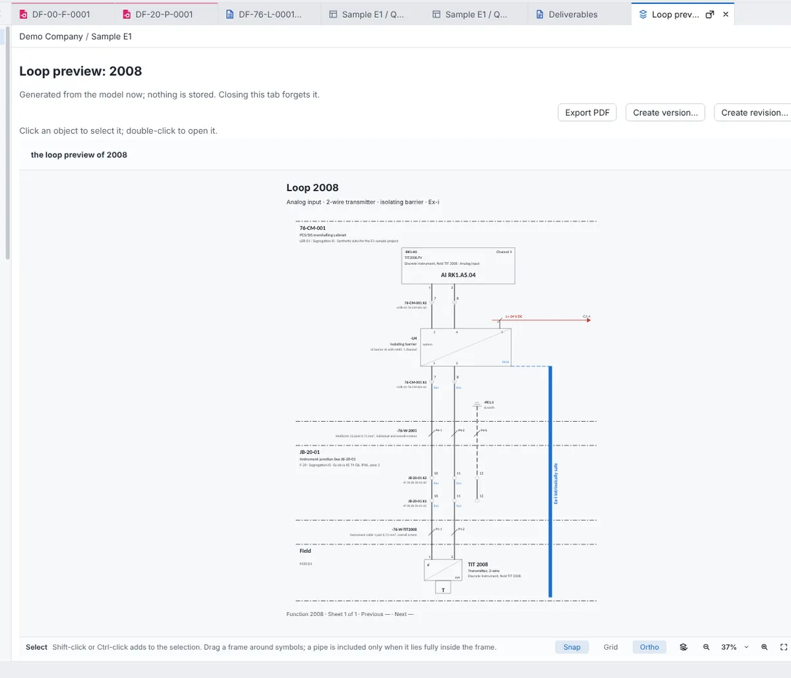
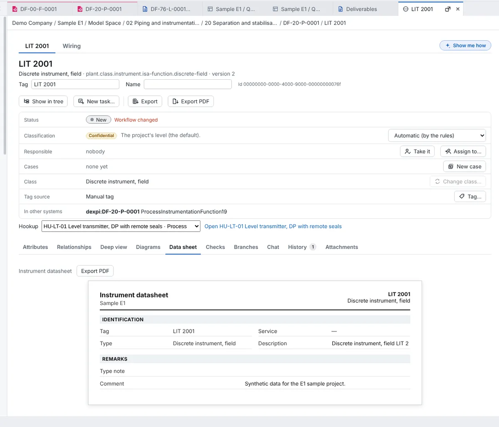
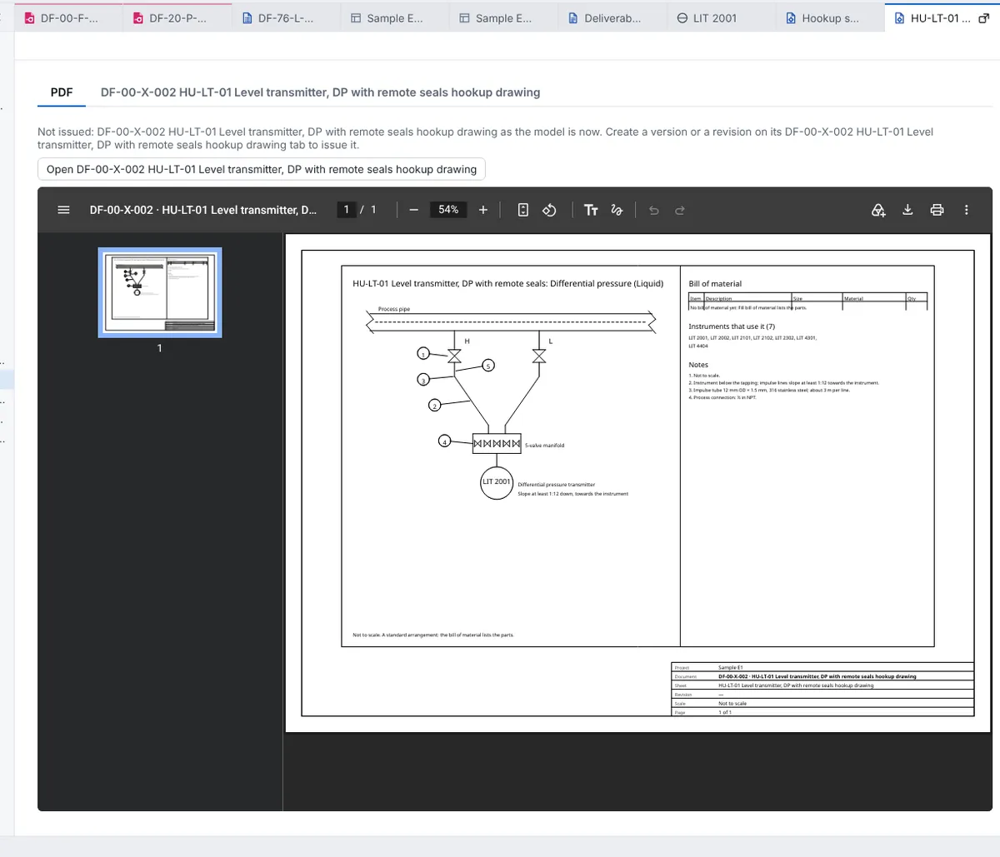

P&IDs and instrumentation, connected to the process.
In E1, every instrument on a P&ID is an object in the plant model with its tag, its values and its relationships. The instrument index, the loop diagrams, the instrument datasheets and the hookups are made from those objects. Change an instrument once and the drawing, the lists and the documents agree.
P&ID software where every symbol is an object
In E1, placing an instrument, valve or item of equipment on a P&ID creates an object in the project with the next free tag from the project's tag rules.
- Every instrument is an object
- Tags from your rules
- DEXPI, DXF and PDF import
E1 draws its own symbols for instruments, control valves and logic as well as for equipment, valves and fittings. You find them in the Add asset window by name, type, class or diagram type, and two clicks set a symbol's inlet and outlet as you place it. The Connector tool draws pipes, signal lines and cables point by point, and each line connects what it touches. Symbols show their tags and pipe runs their line numbers.
Tags follow the project's rules, with reference designations. When an input of a rule changes, the tag is marked out of date instead of changing behind your back, and Retag… shows every old and new tag before it applies them. While Alex is on, placing a pump brings an offer of what usually comes next, drawn as ghost symbols you apply or reject.
- Engineering patterns draw a control valve station or an instrument tap at once, placed, routed and checked (with an AI model set up for Alex).
- Existing P&IDs come in from DEXPI 2.0, DXF or a vector PDF as real objects, checked by you before anything is stored.

Deep view: follow an instrument from the field to the I/O channel
Deep view shows an object and every object associated with it, as a data model of cards and links, like an object diagram rather than a drawing. You open it layer by layer with +1, or all at once with Expand all, until nothing more is linked.
- Every link, as cards
- Highlight route
- Find in view
From LIT 2001 you follow its loop, its cable 76-W-LIT2001, the cores landed on its terminals and the terminal strip in junction box JB-20-01, as well as its alarms and its hookup, and Highlight route shows the way in bold.
Click a card to see its values and links, with Open, Show in tree and Deep view of this. Highlight route draws the way from one card to another in bold while everything else fades; Find in view outlines the cards whose tag, name, class or value holds your text; a chip for each kind of link shows or hides those links.
- Opened from the object window's Deep view tab, or from a symbol on a 2D space: right-click → Open ▸ Deep view.

An instrument index that is never out of date
In E1, the instrument index is read from the model, so it lists exactly the instruments that are on the drawings and in the project.
- Read from the model
- Never out of date
- Export to Excel
Alex's Export instrument index (Excel) reads the instruments, signals and motors on a 2D space and writes the instrument index, the I/O list, the cause and effect and the motor list into one workbook, one sheet per list. If your company uploaded its list column templates in Alex knowledge, the columns follow them.
For the project as a whole, an instrument list is a saved query with the columns you choose. It exports to Excel, CSV or JSON with an E1 id column. Update from Excel… reads an edited file back: Check lists every change row by row, and Apply makes them in one undoable step. An instrument list from another tool comes in with Import Excel…: matching rows are updated and the others become new objects. Up to 100 instruments of one class are made in one go from the New object window.

Loop diagrams generated from the model
In E1, a loop diagram is drawn from the model whenever you look at it: the instruments that implement a control function and the devices it controls, in signal order, with their wiring.
- Drawn from the model
- Cables, cores and terminals
- In signal order
Right-click a function such as TIC-101 and choose Preview loop diagram, or pick several to preview them on one temporary sheet. Nothing is stored while you preview. Export a PDF to send it, or create a version or a revision: only then is each loop stored in Documents, where you can move symbols by hand and Regenerate keeps your moves.
The loop diagram follows each circuit from the device through the junction boxes, cables, marshalling and barriers to the I/O channel, with the barrier's power feed and the screens to their earth bar. Every terminal is drawn in a column by zone: junction box, marshalling field side, interposing, marshalling system side, I/O, and supply and earth. Wiring that is still under way is shown as far as it goes, so loop diagrams are useful from the first day of detailed design.

Instrument datasheets on the same objects
In E1, an instrument datasheet is a view of the instrument's own values: type into the datasheet and the object changes.
- A view of the instrument
- Type in it, the object changes
- Issue it as a document
Ready-made specification datasheets for instruments and valves are E1's own templates inspired by ISA datasheets, such as the electromagnetic flowmeter specification. Lines are numbered, tables of parts continue on continuation pages, units are added and checked, and the PDF looks the same as the screen. The datasheet designer copies a template into your own layout, which can later take over changes from it.
One datasheet document can cover several tags of one class. Shared values show once, values that differ show See list, and one change sets all of them. After a datasheet document is issued, every value changed since shows the next revision beside it, so the next issue is easy to review.

Hookups, hookup drawings and the hookup schedule
In E1, a hookup shows how an instrument is fixed and connected, and every instrument installed the same way uses the same hookup.
- One hookup per installation
- Hookup drawings
- Hookup schedule
Turn hookups on for a project and they get a folder of their own, Assets ▸ Hookups, with their type, mounting, drawing and bill of material. On every instrument you choose the hookup it uses, and every hookup shows the instruments that use it.
A hookup drawing is made from the model: an arrangement sketch with a balloon per part, the bill of material, the instruments that use it and notes, on one A3 page with the title block. The hookup schedule lists every hookup with its instruments and the material they need in total, exported to PDF and Excel and revised and issued like any other document.

Questions engineers ask.
Is the instrument index a separate database from the P&ID?
No. The instrument on the P&ID and the row in the instrument index are the same object. The index is read from the model each time you export it.
Do loop diagrams need finished wiring?
No. A loop diagram shows the wiring that is there. As cores are landed on junction boxes, marshalling and I/O channels, the next preview shows them.
Are the datasheet templates copies of ISA forms?
No. Only the idea comes from ISA, API and ASME specification datasheets. The layout, sections, wording and line numbers are E1's own, with no form names, numbers or logos of theirs.
Can I use my company's own datasheet layout?
Yes. Copy a template, or build a layout from components in the datasheet designer, preview it with several objects and publish it for a class.
Can I import an existing instrument list?
Yes. Import Excel… brings an Excel or CSV tag list into a section: matching rows are updated and the others become new objects, after a preview.
How are tags given to new instruments?
From the project's tag rules, built from segments, lookup tables and options. A manual tag can be set with Tag…, and Retag… brings out-of-date tags back in line after a preview.
In the user guide
- Deep view
- Place a symbol
- Automatic tags and reference designations
- Export the instrument index from the drawing
- Loop diagrams: preview, PDF, version and revision
- Loop diagrams from the wiring
- Datasheet templates inspired by ISA and API datasheets
- A datasheet for several tags
- Hookups: how instruments are fixed and connected